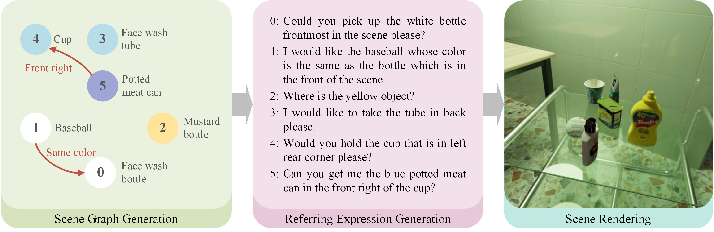
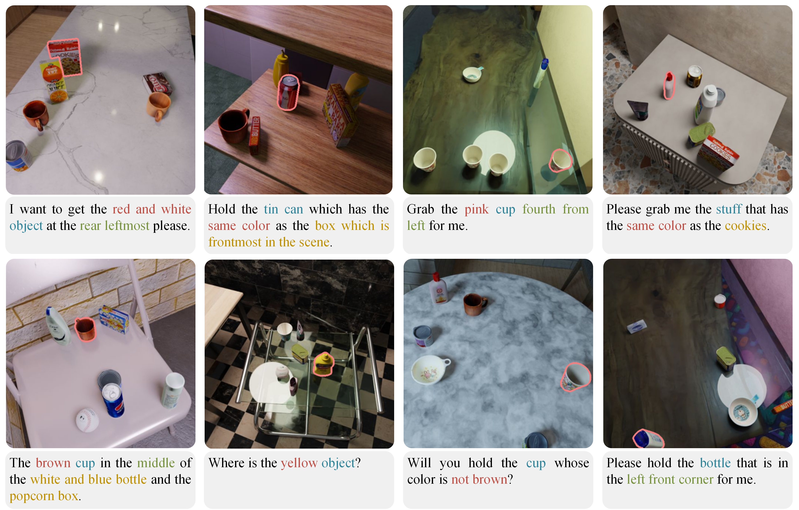
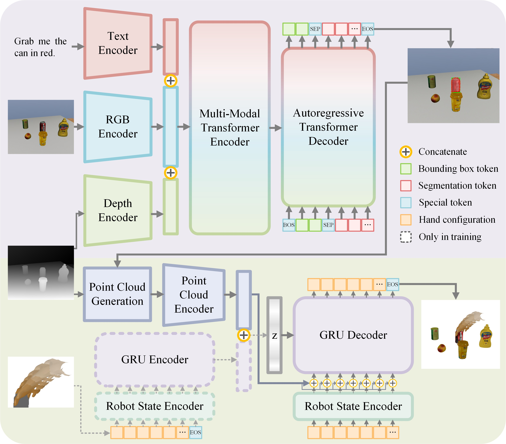

Abstract
Robotic grasping guided by natural language instructions faces challenges due to ambiguities in object descriptions and the need to interpret complex spatial context. Existing visual grounding methods often rely on datasets that fail to capture these complexities, particularly when object categories are vague or undefined. To address these challenges, we make three key contributions. First, we present an automated dataset generation engine for visual grounding in tabletop grasping, combining procedural scene synthesis with template-based referring expression generation, requiring no manual labeling. Second, we introduce the RefGrasp dataset, featuring diverse indoor environments and linguistically challenging expressions for robotic grasping tasks. Third, we propose a visually grounded dexterous grasping framework with continuous grasp generation, validated through extensive real-world robotic experiments. Our work offers a novel approach for language-guided robotic manipulation, providing both a challenging dataset and an effective grasping framework for real-world applications.
Dataset Generation Pipeline
The dataset generation engine consists of a scene graph generation process, a referring expression generation method and a scene rendering pipeline. For an empty scene, we first procedurally generate its scene graph by randomly sampling nodes (objects) and edges (relationships between objects). Subsequently, referring expressions are constructed based on the scene graph using a variety of language templates. Next, object locations are determined according to the scene graph, with random selection of surface types, materials for floors and walls, lighting conditions, etc. Finally, the RGB-D images and segmentation masks are rendered using Blender's Cycles rendering engine.
Dataset Samples
Figure below shows annotated examples from RefGrasp dataset. In the expressions, object references are marked with blue, attributes are marked with red, locations are marked with green and related objects are marked with yellow.
Visually Grounded Dexterous Grasping
The system is designed as a two-stage pipeline, with each stage involving a separate network trained individually. Stage I focuses on perception and segmentation tasks. The input to the network includes an RGB image, a depth image, and natural language instructions, and the output is the segmentation mask of the target object. Stage II addresses the reasoning and decision-making aspects of grasping. First, the depth image, segmentation mask, and robot's current state are fed into the grasp generation network. The output is the grasp configuration, which includes a sequence of actions for the robot to perform the grasp.
Experiment Demos
Citation
Available Soon